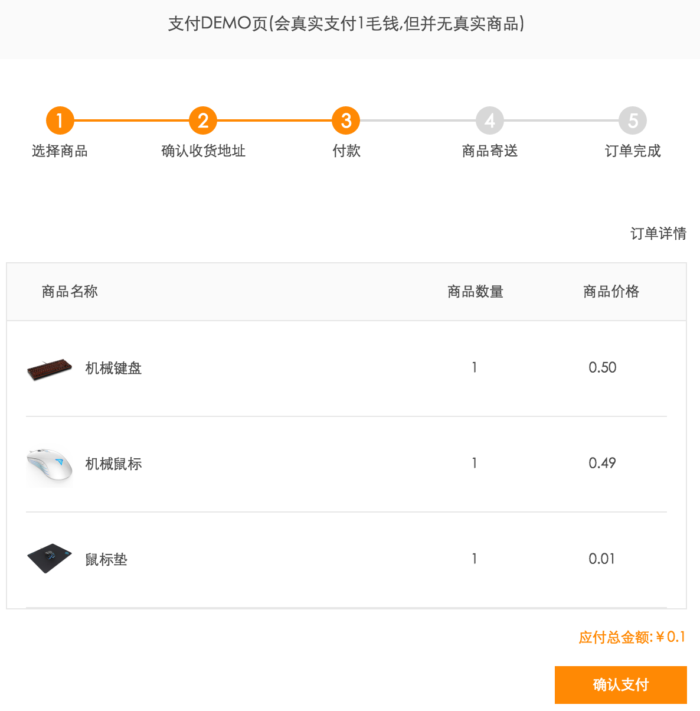
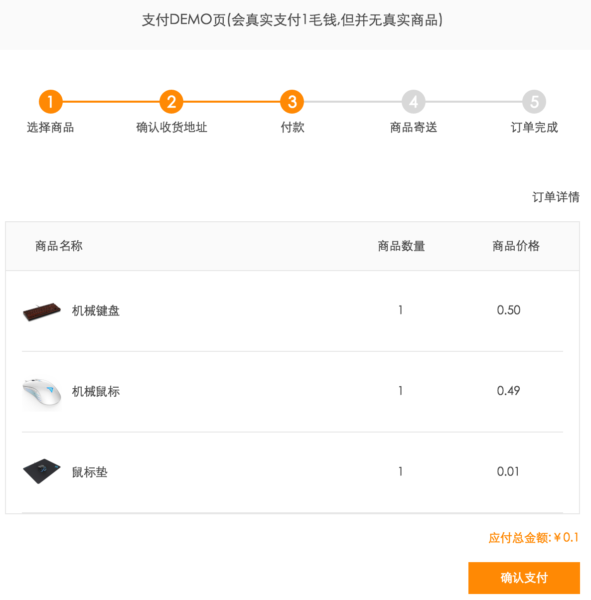

网络支付是时下大热的开发趋势，但市面上支付渠道繁多，接入复杂，深坑不断，大大阻碍了开发者的开发进度。BeeCloud 为开发者提供了一站式支付的解决方案，能便捷快速地实现各种支付渠道的接入，包括微信支付、支付宝、银联、易宝支付、百度钱包、京东支付、快钱、PayPal、Visa、MasterCard。
本文介绍如何在 LeanCloud 云引擎 的 Python 环境 中使用 BeeCloud 的「秒收款 Button」产品来快速部署一个可以收款的网站。应用场景包含任何需要收款的网站（电脑/手机网站），兼容 IE7+、Chrome、Safari 等多数主流浏览器。
http://leancloud.beecloud.cn/demo/jsbutton

首先获取基础项目，这里以 LeanCloud 云引擎 Python 环境作为一个应用的基础：
$ git clone https://github.com/leancloud/python-getting-started.git $ cd python-getting-started
然后参考 BeeCloud 支付 · 快速开始 来了解必要的操作步骤。
激活「秒支付 Button」功能，进入 APP > 设置 > 秒支付 Button：
拖动 支付渠道 开启该支付渠道。同时还可以调整你需要的渠道菜单的显示顺序，点击 保存 后会生成 appid 对应的 script 标签。需要将此 script 标签放到任何需要使用秒支付 Button 的网页里。
创建新页面 templates/jsbutton.html 和 views/jsbutton.py，如下图：
templates/jsbutton.html
views/jsbutton.py
在 jsbutton.html 页面的 <head></head> 中插入上一节中我们获得的 script 标签：
jsbutton.html
<head></head>
<script id='spay-script' src='https://jspay.beecloud.cn/1/pay/jsbutton/returnscripts?appId=xxxxxx-xxxx-xxxx-xxxx-xxxxxxxxxx'></script>
然后调用 script 中包含的 BC.Click() 方法，进行支付。
BC.Click()
// 参数 data 必填，event 为选填 BC.click(data, event);
out_trade_no
"bc1234567"
title
"你的订单"
amount
1
sign
appId
appSecret
b6273d932b0aa801d9bd97220f1fb039
return_url
http://
https://
http://www.beecloud.cn
debug
false
optional
{key:value}
{"msg":"hello world"}
instant_channel
ali
wxmp
wx
un
"ali"
need_ali_guide
true
wxJsapiFinish
dataError
function(msg)
function(res)
wxJsapiSuccess
wxJsapiFail
若为移动端 H5 页面，页面头部需加上以下 meta 做移动适配。
<meta name="viewport" content="width=device-width,initial-scale=1.0,minimum-scale=1.0,maximum-scale=1.0,user-scalable=no">
JavaScript 传递的参数中 sign 比较特殊，用来保证订单信息的完整性。它不能用 JavaScript 生成，而需要在 Python 代码中实现。
<!-- jsbutton.html --> <head> <script id='spay-script' src='https://jspay.beecloud.cn/1/pay/jsbutton/returnscripts?appId=e66e760b-0f78-44bb-a9ae-b22729d51678'></script> </head> <body> <div id="container"> <h1>BeeCloud</h1> <p>这是 BeeCloud 秒支付button 的示例应用</p> <br> <p>1分钱支付测试</p> <button id="test">点我付款</button> </div> <script> //需要发起支付时（示例中绑定在一个按钮的 click 事件中），调用 BC.click 方法 document.getElementById("test").onclick = function() { asyncPay(); }; function bcPay() { BC.click({ "title": "product", "amount": 1, "out_trade_no": "<uuid变量值>", //唯一订单号 "sign" : "<sign变量值>", "openid" : "<openid变量值>", "return_url" : "http://leancloud.beecloud.cn/demo/jsbutton/payresult", /** * optional 为自定义参数对象，目前只支持基本类型 key-value 的 map，不支持嵌套对象； * 回调时如果有 optional 则会传递给 Webhook 地址，Webhook 的使用请查阅文档 * 由于 flask 的模板会将 map 转义，所以需要 tojson|safe 标签防止转义 */ "optional": <optional对象|tojson|safe>, "debug" : false }); } // 这里不直接调用 BC.click 的原因是防止用户点击过快，BC 的 JS 还没加载完成就点击了支付按钮。 // 实际使用过程中，如果用户不可能在页面加载过程中立刻点击支付按钮，就没有必要利用 asyncPay 的方式，而是可以直接调用 BC.click。 function asyncPay() { if (typeof BC == "undefined") { if (document.addEventListener) { // 大部分浏览器 document.addEventListener('beecloud:onready', bcPay, false); } else if (document.attachEvent) { // 兼容 IE11 之前的版本 document.attachEvent('beecloud:onready', bcPay); } } else { bcPay(); } } </script> </body>
# jsbutton.py # from flask import Blueprint from flask import request from flask import redirect from flask import url_for from flask import render_template from urllib import quote import sys import uuid import urllib import hashlib wx_appid = "wx00000000xxxx" wx_oauth_url_basic = 'https://open.weixin.qq.com/connect/oauth2/authorize?' appid = "xxxxxxxx-xxxx-xxxx-xxxx-xxxxxxxxxx" appsecret = "xxxxxxxx-xxxx-xxxx-xxxx-xxxxxxxxxx" title = "product" amount = "1" class JsButton(): pass jsbutton_view = Blueprint('jsbutton', __name__) @jsbutton_view.route('') def show(): agent = request.headers.get('User-Agent') # 生成订单号 out_trade_no = (str)(uuid.uuid1()).replace('-','') # 计算 sign m = hashlib.md5() m.update(appid+title+amount+out_trade_no+appsecret) # 当用户在微信内打开网页时，如果你激活了公众号支付，秒支付 button 将会自动选择公众号支付；在非微信内打开网页时，默认选择的是微信二维码支付。 if "MicroMessenger" in agent: open_id = request.args.get('openid', '') # 微信公众号支付需要额外参数微信 openid，需要用户自己写代码获取，微信提供了各语言的函数库如下：https://pay.weixin.qq.com/wiki/doc/api/native.php?chapter=11_1 if not open_id: url = "http://xx.xxx.xx/activity/getopenid.php?callbackurl=" + quote("http://leancloud.beecloud.cn/demo/jsbutton") return redirect(url) else: # 获取到 openid 后进行支付 return render_template('jsbutton.html', uuid=out_trade_no, sign=m.hexdigest(), openid=open_id) # 非微信公众号不需要 openid 发起支付 return render_template('jsbutton.html', uuid=out_trade_no, sign=m.hexdigest(),openid="",optional={"key" : "value"})
在之前的代码中，我们设置了支付成功后跳转地址参数 return_url。当支付完成后（不包括微信内的公众号支付）从支付页会自动跳转到这个地址，通知用户支付结果，但是此结果只用于展示，本页面也不做任何业务逻辑。
return_url 为渠道发起，URL 中会附带渠道的一些支付参数供用户展示，更多信息请请参考 BeeCloud 文档 · return_url。
Webhook 的作用是异步通知商户真正的支付结果，用来处理业务逻辑。详细用法请参考 BeeCloud Webhook 开发指南。
# webhook.py # # 接收 Webhook 推送需要确保你的服务端地址能够在公网被访问 from flask import Flask, request from beecloud.entity import BCApp import hashlib app = Flask(__name__) # 请与你支付和退款的 app 参数保持一致 bc_app = BCApp() bc_app.app_id = 'xxxxxxxx-xxxx-xxxx-xxxx-xxxxxxxxxx' bc_app.app_secret = 'xxxxxxxx-xxxx-xxxx-xxxx-xxxxxxxxxx' ''' 推送标准： HTTP 请求类型 : POST HTTP 数据格式 : JSON HTTP Content-type : application/json ''' @app.route('/webhook', methods=['POST']) def app_accept_webhook(): # 获取 json 数据 json_data = request.get_json() # 第一步：验证数字签名 # 从 BeeCloud 传回的 sign bc_sign = json_data['sign'] # 自己计算出 sign：App ID + App Secret + timestamp 的 MD5 生成的签名（32 字符十六进制） timestamp = json_data['timestamp'] my_sign = hashlib.md5((bc_app.app_id + bc_app.app_secret + str(timestamp)).encode('UTF-8')).hexdigest() # 判断两个 sign 是否一致 if bc_sign != my_sign: return '' # 如果一致第一个检验通过 ''' 理论上说到这一步就可以 return 'success' 以下的业务逻辑请根据商户内部需求处理， 不需要重发了就应该返回 success ''' # 第二步：过滤重复的Webhook ''' 同一条订单可能会发送多条支付成功的 Webhook 消息， 这有可能是由支付渠道本身触发的(比如渠道的重试)， 也有可能是 BeeCloud 的 Webhook 重试。 客户需要根据订单号进行判重，忽略已经处理过的订单号对应的 Webhook。 ''' # 获取订单号 bill_num = json_data['transaction_id'] ''' 以下为伪代码： # 从 LeanCloud 数据库中根据订单号取出订单数据，如发现已经支付成功，则忽略该订单 if bill_info.pay_result == 'SUCCESS': return '' ''' # 第三步：验证订单金额，以分为单位 bill_fee = json_data['transaction_fee'] ''' 以下为伪代码： # 如果金额不匹配，表明订单可能被篡改 if bill_info.bill_fee != bill_fee: return '' ''' # 如果金额匹配第二个检验通过 # 第四步：处理业务逻辑和返回 # 更新你的订单状态 # update_bill(...) # 用户返回 success 字符串给 BeeCloud 表示 - 正确接收并处理了本次 Webhook # 其他所有返回都代表需要继续重传本次的 Webhook 请求 return 'success'
为网站快速加入收款功能
网络支付是时下大热的开发趋势，但市面上支付渠道繁多，接入复杂，深坑不断，大大阻碍了开发者的开发进度。BeeCloud 为开发者提供了一站式支付的解决方案，能便捷快速地实现各种支付渠道的接入，包括微信支付、支付宝、银联、易宝支付、百度钱包、京东支付、快钱、PayPal、Visa、MasterCard。
本文介绍如何在 LeanCloud 云引擎 的 Python 环境 中使用 BeeCloud 的「秒收款 Button」产品来快速部署一个可以收款的网站。应用场景包含任何需要收款的网站（电脑/手机网站），兼容 IE7+、Chrome、Safari 等多数主流浏览器。
Demo
http://leancloud.beecloud.cn/demo/jsbutton

准备工作
首先获取基础项目，这里以 LeanCloud 云引擎 Python 环境作为一个应用的基础：
然后参考 BeeCloud 支付 · 快速开始 来了解必要的操作步骤。
配置 BeeCloud
激活「秒支付 Button」功能，进入 APP > 设置 > 秒支付 Button：
拖动 支付渠道 开启该支付渠道。同时还可以调整你需要的渠道菜单的显示顺序，点击 保存 后会生成 appid 对应的 script 标签。需要将此 script 标签放到任何需要使用秒支付 Button 的网页里。
接入秒支付 Button 实现收款
创建新页面
templates/jsbutton.html和views/jsbutton.py，如下图：在
jsbutton.html页面的<head></head>中插入上一节中我们获得的 script 标签：然后调用 script 中包含的
BC.Click()方法，进行支付。BC.click
参数 data
out_trade_no全局唯一，8 到 32 位的字母和/或数字组合，例如
"bc1234567"。title小于 16 汉字或者 32 个字符，例如
"你的订单"。amount大于 0，例如
1。sign依次将以下 BeeCloud 字段值（注意是 UTF8 编码）进行拼接：
appId、title、amount、out_trade_no、appSecret，然后计算新字符串的 32 位 MD5 值，例如b6273d932b0aa801d9bd97220f1fb039。return_urlhttp://或https://开头，例如http://www.beecloud.cn。debugfalse。optional{key:value}，不支持嵌套对象，例如{"msg":"hello world"}。instant_channel必须为
ali、wxmp（native 扫码）、wx（jsapi 网页内支付）、un中的一个，例如"ali"。need_ali_guidefalse，默认为true。参数 event
wxJsapiFinish等事件。dataErrorfunction(msg)wxJsapiFinishfunction(res)wxJsapiSuccessfunction(res)wxJsapiFailfunction(res)示例文件
若为移动端 H5 页面，页面头部需加上以下 meta 做移动适配。
JavaScript 传递的参数中 sign 比较特殊，用来保证订单信息的完整性。它不能用 JavaScript 生成，而需要在 Python 代码中实现。
支付同步返回结果
在之前的代码中，我们设置了支付成功后跳转地址参数
return_url。当支付完成后（不包括微信内的公众号支付）从支付页会自动跳转到这个地址，通知用户支付结果，但是此结果只用于展示，本页面也不做任何业务逻辑。return_url为渠道发起，URL 中会附带渠道的一些支付参数供用户展示，更多信息请请参考 BeeCloud 文档 · return_url。支付异步返回结果
Webhook 的作用是异步通知商户真正的支付结果，用来处理业务逻辑。详细用法请参考 BeeCloud Webhook 开发指南。
常见问题